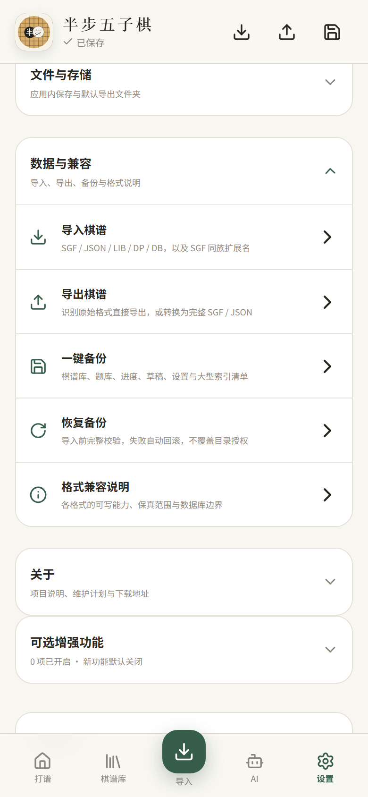
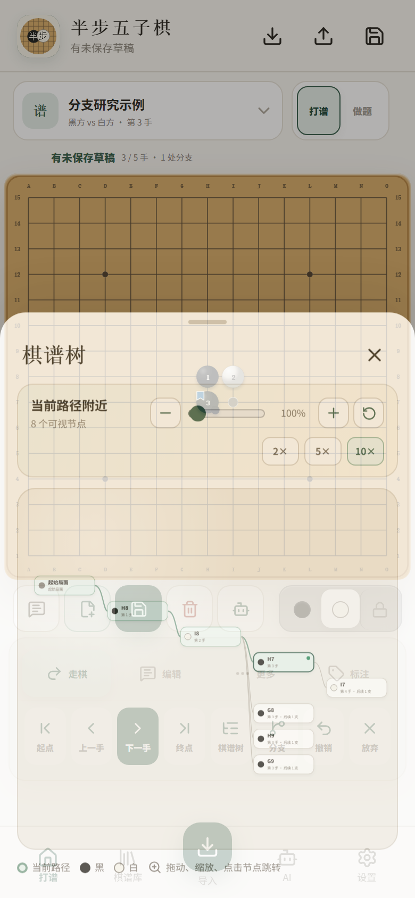

LIB、DB、JSON
都能进入同一套研究流程
不只是“能导入”：打开后继续查看局面、分支和注释，再通过可视化棋谱树理解复杂变化。
LIBDB / DPJSON

导入文件→浏览分支→棋谱树→注释与导出
使用 RenLib 网页核心和 WASM 按当前路径读取，保留可见分支与原谱文字。
适合大型棋谱兼容已经识别的 LZ4 数据库结构，提取记录并合并为可浏览的变化树。
失败不会静默误导入支持完整 RENJU 棋谱、明确 moves 列表和题库对象，便于跨端交换与备份。
结构明确才读取